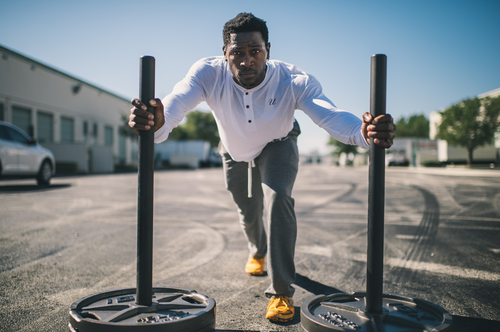
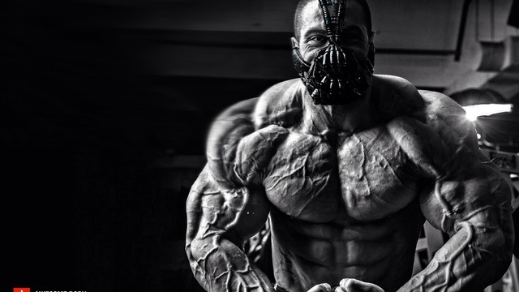

Motivation
 
Top 10 Workout Motivation Videos That Will Inspire You
What gets you pumped to workout? What gets you excited to really push yourself to the limit?
Is it a coach screaming in your ear, a friend telling you can do better, or an inner voice that is not satisfied with anything less than your best effort?
It is no secret that success in body transformation and long term health has more to do with motivation and mindset than it does anything else. Motivation is the engine which powers every accomplishment in our lives, every achievement.
Given how important motivation is for our success, we asked our expert contributors, facebook fans, twitter followers, and Youtube subscribers for their favorite workout motivation videos. We compiled a list of the top 10 videos, which you can find below.
As we all have different ideas about what gets us motivated, the videos range from big dudes lifting heavy weights with loud music, to others that are more subtle and only tangentially related to working out. But these more subtle videos may be the most motivating.
We hope a few of these ten workout motivation videos, or even just one can help you get a little more motivated to strive toward your own fitness goals, to be the best YOU can be.
#1 – The Law Of Gym (No Pain, No Gain)
Love him, or hate him, Arnold Schwartznegger was a driving force in helping popularize lifting weights in the U.S. and around the world. Coming to America at the age of 21 speaking little English, he is undeniably an incredible success story. He made it cool to want to lift hard and build some muscle. In this video, he offers a narrative about motivation and never stopping until you succeed.
#2 – High-Quality Sports Motivation Video
Combining high quality video, exceptional video editing, powerful music, and special effects to create the most beautiful and possibly best video on the list. You must want to get off the couch and move after seeing this video…or continue sitting on the couch to watch it over and over again. Hopefully the former. While there is a 15 second commercial before the video starts, it is well worth the wait.
#3 – How Bad Do You Want It (Success)
This is a classic workout motivation video with over 15 million views, which makes it by far the most viewed video on this list. The video features a running back from East Caroline Giavanni Ruffin training. Narrating the video is a speech by Eric Thomas (AKA The Hip Hop Preacher). One element that makes this video so powerful is that Giavanni is consumed by his mission to become a better football player, which is highlighted by all the different places he trains (at the beach, on some fields, at the track, in the gym etc.) Tremendous focus and effort necessary to truly be the best you can be.
#4 – Alabama Football Training Day
“If it feels good, you ain’t doing it right” – Alabama Strength Coach
I chose this video partly because it reminds me of my college days as an athlete when I was never more motivated to workout. When you have a crazy strength coach staring and screaming at you, you tend to give the extra 25% you didn’t even know you had. Alabama is a storied football program, so this behind-the-scenes video of them pushing each other in the gym is rare. I can assure you these guys didn’t get so muscular sitting on the couch, but by working REALLY hard in the gym.
#5 – Female Workout Motivation
This video highlights fitness competitor Renae Thomas lifting a serious amount of weight; she is doing single arm dumbbell rows with 80lb at one point in the video. She is not lifting the stereotypical 5-10lb dumbbells most women lift and she still looks very feminine despite how much weight she is lifting. For the guys, if you see a pretty girl out-lifting you, I am not sure there is better motivation to hit the gym!
#6 – No Excuses
This is a great video to help you stop making excuses. I like it so much, we have already featured it in another article on BuiltLean – Top 10 Excuses For Not Exercising. I was laughing really hard at some of the excuses he came up with, maybe you will too.
#7 – No Arms, No Legs, No Worries
Nick Vunicic is a true inspiration; he has no arms or legs, but makes the most of his life as a brilliant motivational speaker and active sports and fitness enthusiast. Next time you are feeling sorry for yourself after a long day, think of Nick.
#8 – Bruce Lee Training
Watching Bruce Lee kick the stuffing out of people is always entertaining, and this video highlights just that. While it is not specific to going to the gym, or running per se, I hope it does get you excited to move around and do something active.
#9 – Girls Can Workout Too
This video features women doing challenging bodyweight exercises that are not associated with what most women are able to do, like pull ups. In fact, there was even a New York Times article that highlighted how difficult it is for women to do pull ups. The truth is that women can certainly hang with the guys, it is just a matter of mindset.
#10 – Arnold Schwarzenegger Training
While not as powerful as the first video, this video features Arnold Schwarzenegger with loud music that powerfully drives the video. Arnold is one of the most ferociously competitive men out there, so watching how hard he trains can be very motivating.